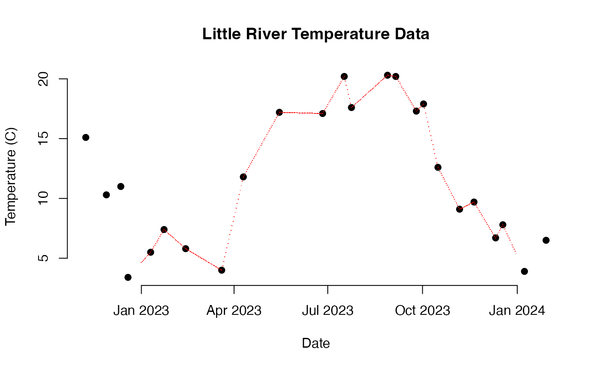
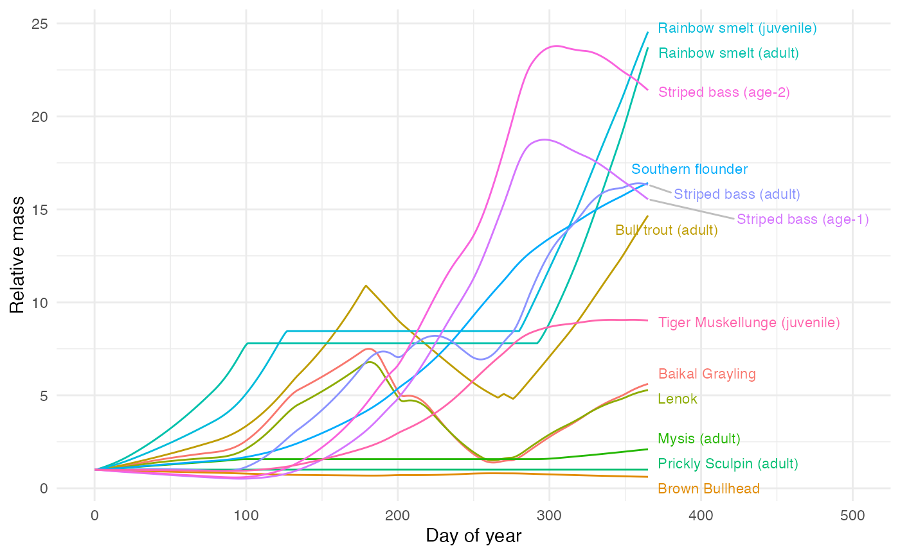

External Data
External_Data.RmdExternal Data
It is important to have data to use for analysis. These data include bioenergetics parameters for the fish (or other species of interest) and water temperature.
Bioenergetics Parameters
The Fish Bioenergetics 4.0 software (Hanson et al. 1997, Deslauriers
et al. 2017) provides a set of bioenergetics parameters for many species
of fish from other sources, which also need to be cited. However, not
all species are included in the software. One approach is to get a
profile for the most closely related species to the one of interest. To
do that, we use the phylogeny from the Open Tree of Life (Hinchliff et
al. 2015) to find the closest species and then use the Fish
Bioenergetics 4.0 software to get the parameters for that species. For
example, suppose we wanted the parameters for the arctic grayling
(Thymallus arcticus), to see what might happen if it were
introduced to the eastern US. We can use the
fb4_closest_species function to find the closest species in
the Fish Bioenergetics 4.0 database:
library(fishyenergy)
closest_species <- fb4_closest_species("Thymallus arcticus")
#> [1] "Sources for Thymallus arcticus baicalensis are: Hartman and Jensen 2016"
closest_species
#> [1] "Thymallus arcticus baicalensis"We can then get information from the included dataset,
fb4_data, to get the source for that species:
print(fb4_data$Source[fb4_data$Sci_Name == closest_species])
#> [1] "Hartman and Jensen 2016"We can then use the bem_from_fb4 function to get the
bioenergetics parameters for that species, if we supply the closest
species name. We also have to include parameters that are not in the
Fish Bioenergetics 4.0 software, such as the proportion of maximum
consumption and other parameters. The values below are from Troia and
Perkin (2022) for Micropterus treculii and are probably wrong
for Thymallus arcticus.
BEM <- bem_from_fb4(closest_species, CP=0.5, FA=0.1018428, UA=0.08743042, SDA=0.150819, ED=3983.646)We might want to see how this species would grow in various places in
Tennesssee, but we need information on the water temperature in those
places. One source is the US Geological Survey (USGS) databases, which
have that information. So let’s find all the sites in Tennesssee that
have water temperature data, using a wrapper for the
dataRetrieval package:
stations <- water_stations_find(state="TN")
knitr::kable(head(stations[,1:6], 5), caption="First 5 stations in Tennessee with water temperature data")| agency_cd | site_no | station_nm | site_tp_cd | dec_lat_va | dec_long_va |
|---|---|---|---|---|---|
| USGS | 351113089513401 | SH:Q-186 | GW | 35.18703 | -89.85939 |
| USGS | 351111089512501 | SH:Q-094 | GW | 35.18653 | -89.85681 |
| USGS | 07030392 | WOLF RIVER AT LAGRANGE, TN | ST | 35.03259 | -89.24674 |
| USGS | 03604000 | BUFFALO RIVER NEAR FLAT WOODS, TN | ST | 35.49591 | -87.83280 |
| USGS | 03604500 | BUFFALO RIVER NEAR LOBELVILLE, TN | ST | 35.81284 | -87.79752 |
Let’s see how they’d do in the Little River:
little_river_row <- stations[stations$station_nm == "LITTLE RIVER ABOVE TOWNSEND, TN",]
little_river_id <- paste0("USGS-", little_river_row$site_no)For this, we would need the water temperature for that site. Let’s get it for 2023, padding a bit on each side so we can get a full year of data:
raw_temps <- daily_temperature_raw(little_river_id, start_date="2022-11-01", end_date="2024-02-01")This was measured manually, so there are not a lot of data points. Let’s plot the data to see what it looks like:
plot(raw_temps$ActivityStartDate, raw_temps$ResultMeasureValue, pch=19, xlab="Date", ylab="Temperature (C)", main="Little River Temperature Data", bty="n")We need points for every day, so let’s interpolate the data. By
default, it will give us an error if there are a lot of missing data: by
default, if it is over 80% missing. But we can manually change that
threshold with the minimum_fraction_missing argument. Let’s
set it to 0.5, so it will give us an error if more than 50% of the data
is missing. We can also focus on just 2023 by setting the
start_date and end_date arguments:
interpolated_temps <- daily_temperature_interpolate(raw_temps, minimum_fraction_missing=0.05, start_date="2023-01-01", end_date="2023-12-31")We can see these on the original plot:
plot(raw_temps$ActivityStartDate, raw_temps$ResultMeasureValue, pch=19, xlab="Date", ylab="Temperature (C)", main="Little River Temperature Data", bty="n")
points(interpolated_temps$date, interpolated_temps$temp, col="red", pch='.')
It’s not a smoothed plot: we keep the actual temperatures the fish experienced, and just linearly interpolate between them. Now we can compute the weight gain for the fish at this site:
station_result <- single_station_compute(T_vector=interpolated_temps$temp, BEM=BEM)We can plot the weight gain over the year:
plot(interpolated_temps$date, station_result$W2_cum, xlab="Date", ylab="Mass (g)", type='l', bty="n", main="Weight Gain in Little River")We can look at every species in the database and see how they would have done in the Little River in TN. For this, we will make very, very bad assumptions: they all start with a weight of 6.382417 g, they all have the same joules per gram of wet mass for the species’ prey, and they all have the same oxycalorific coefficient. If we knew these we could pass in a vector with one value per organism, including different values for different life stages if present. We also assume each is happy living in a freshwater temperate mountain stream – very unlikely for a species like a lionfish, but we will throw it in.
all_organisms <- loop_species_across_station(interpolated_temps$temp)
all_organisms$SpeciesStage <- all_organisms$common
for (i in 1:nrow(all_organisms)) {
if (nchar(all_organisms$life_stage[i]) > 0) {
all_organisms$common[i] <- paste0(all_organisms$SpeciesStage[i], " (", all_organisms$life_stage[i], ")")
}
}
somewhat_surviving_organisms <- all_organisms[!is.na(all_organisms$W2_cum),]
weird_taxa <- unique(c(subset(somewhat_surviving_organisms, ProportionStartingWeight < 0.5 | ProportionStartingWeight > 25)$SpeciesStage, all_organisms$SpeciesStage[is.na(all_organisms$W2_cum)]))
feasible_organisms <- somewhat_surviving_organisms[!somewhat_surviving_organisms$SpeciesStage %in% weird_taxa,]
library(ggplot2)
library(ggrepel)
library(dplyr)
last_points <- feasible_organisms |>
group_by(SpeciesStage) |>
slice_max(order_by = julian, n = 1)
ggplot(feasible_organisms, aes(x=julian, y=ProportionStartingWeight, color=SpeciesStage)) +
geom_line() + theme_minimal() +
geom_text_repel(
data = last_points,
aes(label = SpeciesStage),
hjust = 0, nudge_x = 5, size = 3, show.legend = FALSE, segment.color = 'gray', box.padding = 0.3, max.overlaps = Inf
) +
labs(x="Day of year", y="Relative mass") + xlim(c(0, 500)) + theme(legend.position = "none")
We can also see what organism would not survive (would go to zero body mass) in the Little River in TN given our (bad) assumptions going into the analysis:
dead_organisms <- sort(unique(somewhat_surviving_organisms$SpeciesStage[which(somewhat_surviving_organisms$W2_cum<0)]))The organisms that would not survive are Alewife (adult), Atlantic cod (juvenile & adult) , Atlantic menhaden (YOY), Baltic herring (YOY), Bay anchovy (juvenile & adult), Bluegill sunfish (adult), Bluegill sunfish (juvenile), Brook Trout (juvenile & adult), Brown Trout, Burbot (juvenile & adult), California Killifish (juvenile & adult), Chinook salmon (adult), Coho salmon (adult), Cutthroat trout, Dace (adult & juvenile), Eurasian perch (1 g), Eurasian perch (100 g), Eurasian perch (larvae & YOY), European anchovy (adult), European anchovy (egg & larvae), European anchovy (juvenile), Fathead minnow, Gizzard shad, Herring (adult), Herring (juvenile), Humpback chub (juvenile & sub-adult), Indo-Pacific Lionfish (juvenile & adult), Lake trout (adult), Lingcod , Nile perch, North Sea cod, Northern pikeminnow, Pallid sturgeon (juvenile), Pallid sturgeon (larvae), Pink salmon (adult), Plains killifish , Rainbow Trout (adult) , Rainbow Trout (juvenile) , Red River shiner, Ruffe, Sacramento perch, Saugeye, Sea lamprey, Smallmouth bass (adult), Smallmouth Bass (T<=26 & sub-adult & adult), Smallmouth Bass (T>26 & sub-adult & adult), Snakehead (juvenile), Sockeye salmon (adult), Steelhead (adult), Striped bass (larvae), Tilapia (adult), Walleye (adult), Walleye (larvae & juvenile), Walleye pollock (>400 g), Walleye pollock (100-299 g), Walleye pollock (300-400 g), Walleye pollock (adult), Walleye pollock (juvenile), Western mosquitofish (juvenile & adult), White bass (larvae), Yellow perch (adult), Yellow perch (juvenile), Yellow perch (larvae), Zander (adult), Zebra mussel (adult).
This is a very bad analysis, but it shows how to use the
fishyenergy package to get bioenergetics parameters for a
species, find water temperature data, and compute weight gain for that
species at a site – use it with your own better data!